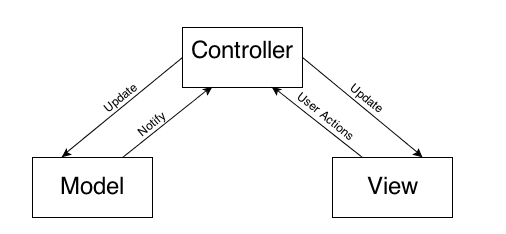
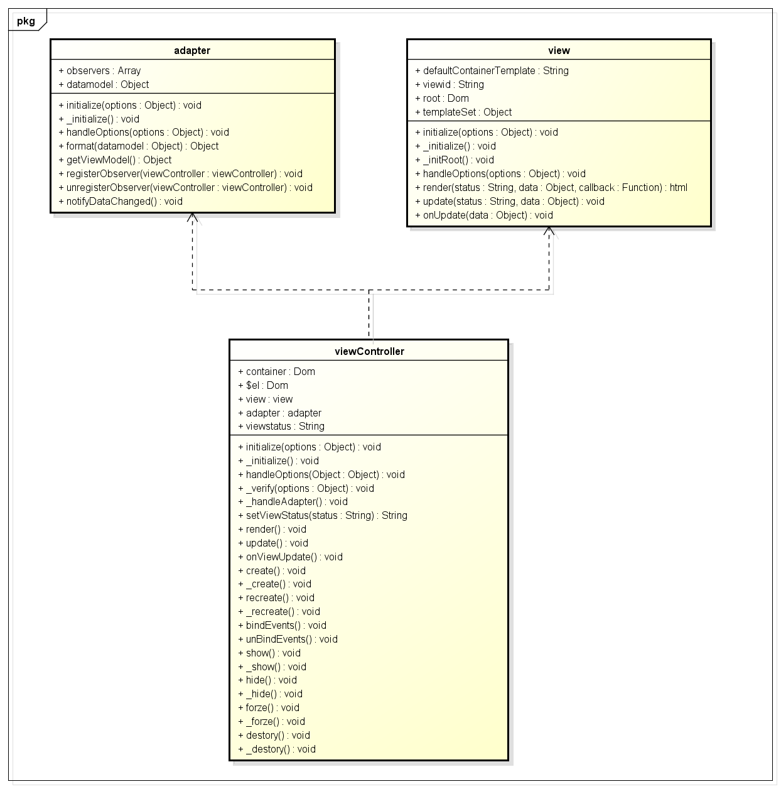
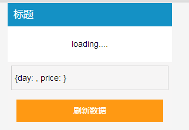
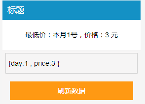
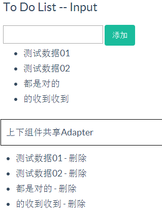
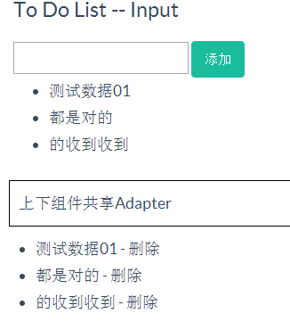

【单页应用】理解MVC
前言
之前我们为view引入了wrapperSet的概念，想以此解决view局部刷新问题，后来发现这个方案不太合理
view里面插入了业务相关的代码，事实上这个是应该剥离出去，业务的需求千奇百怪，我们不应该去处理
view现在只提供最基础的功能：
① 定义各个状态的模板
② 渲染模板
整个view的逻辑便该结束了，有一个比较特殊的情况是，当状态值不变的情况就应该是更新，这个可能会有不一样的逻辑也应该划出去
Adapter的意义在于存储view渲染过程中需要的data数据，从组成上分为
① datamodel
② viewmodel
datamodel用于具体操作，viewmodel被干掉了，提供一个getViewModel的方法替换，并且对外提供一个format方法用于用户继承
format的参数便是datamodel，这里通过处理返回的数据便是我们所谓的viewModel，他将会用于view生成对应html
然后datamodel的改变会引起对应view的变化，这个变化发起端与控制端皆在viewController，最后viewController会通知到view重新渲染
Controller依旧是交互的核心，他是连接Adapter以及view的桥梁
view与Adapter本身并没有关联，Controller将之联系到了一起：
① 在实例化时候便会关联一个Adapter以及view的实例，这里Adapter不是必须的
② viewController会保留一个view的根节点，view的根节点只会存在一个
③ viewController会在Adapter实例上监听自身，在adpter datamodel发生变化时候通知到自己，便会触发update事件
④ 传入初始状态的status以及Adapter的datamodel，调用view的render方法，会生成当前状态的view的html
⑤ 将之装入view的根节点，并且为viewController的this.$el赋值，create的逻辑结束
⑥ 触发viewController show事件，将events绑定到根节点，将$el append到container容器中并显示，初步逻辑结束
⑦ viewController有几个事件点用于用户注册，本身也具有很多一系列dom事件，可能导致datamodel的变化
⑧ 若是Adapter的datamodel发生变化便会触发dataAdpter改变的notify事件，这个时候viewController便会有所反应
⑨ datamodel的改变会触发viewController的update事件，默认会再次触发render事件重新新渲染结构
由于render会放给view自定义，所以其中需要执行的逻辑便不需要我们的关注了
实例
这个便是一个标准的MVC模型，借IOS MVC的模型来说


核心操控点在于Controller，Controller会组织model以及view
由于Controller上注册的各系列事件，会引起model的变化，
每次model产生变化后会重新通知，Controller 通知view update操作
这个时候view会获取viewController的状态值以及model的数据渲染出新的view
view只负责html渲染
model只负责操作数据，并且通知观察者改变事件
Controller将view以及model联系起来，所有的事件全部注册至Controller
PS：传统的View会包含事件交互，这里放到了Controller上
模型会把datamodel的改变通知到控制器，控制器会更新视图信息，控制器根据view组成dom结构，并且注册各种UI事件，又会触发datamodel的各种改变
这就达到了理想情况的view与model的分离，一个model（adpter可用于多个viewController），一个dataAdpter的改变会影响两个视图的改变
这个MVC可以完全解耦view以及model，view的变化相当频繁，若是model控制view渲染便会降低model的重用
这里首先举一个例子做简单说明：


1 <!doctype html> 2 <html lang="en"> 3 <head> 4 <meta charset="UTF-8"> 5 <title>ToDoList</title> 6 <meta name="viewport" content="width=device-width, initial-scale=1.0"> 7 <link rel="stylesheet" type="text/css" href="http://designmodo.github.io/Flat-UI/bootstrap/css/bootstrap.css"> 8 <link rel="stylesheet" type="text/css" href="http://designmodo.github.io/Flat-UI/css/flat-ui.css"> 9 <link href="../style/main.css" rel="stylesheet" type="text/css" /> 10 <style type="text/css"> 11 .cui-alert { width: auto; position: static; } 12 .txt { border: #cfcfcf 1px solid; margin: 10px 0; width: 80%; } 13 ul, li { padding: 0; margin: 0; } 14 .cui_calendar, .cui_week { list-style: none; } 15 .cui_calendar li, .cui_week li { float: left; width: 14%; overflow: hidden; padding: 4px 0; text-align: center; } 16 </style> 17 </head> 18 <body> 19 <article id="container"> 20 </article> 21 <script type="text/underscore-template" id="template-ajax-init"> 22 <div class="cui-alert" > 23 <div class="cui-pop-box"> 24 <div class="cui-hd"> 25 <%=title%> 26 </div> 27 <div class="cui-bd"> 28 <div class="cui-error-tips"> 29 </div> 30 <div class="cui-roller-btns" style="padding: 4px; "><input type="text" placeholder="设置最低价 {day: '', price: ''}" style="margin: 2px; width: 100%; " id="ajax_data" class="txt" value="{day: , price: }"></div> 31 <div class="cui-roller-btns"> 32 <div class="cui-flexbd cui-btns-sure"><%=confirm%></div> 33 </div> 34 </div> 35 </div> 36 </div> 37 </script> 38 <script type="text/underscore-template" id="template-ajax-suc"> 39 <ul> 40 <li>最低价：本月<%=ajaxData.day %>号，价格：<%=ajaxData.price %> 元</li> 41 </ul> 42 </script> 43 44 <script type="text/underscore-template" id="template-ajax-loading"> 45 <span>loading....</span> 46 </script> 47 48 <script src="../../vendor/underscore-min.js" type="text/javascript"></script> 49 <script src="../../vendor/zepto.min.js" type="text/javascript"></script> 50 <script src="../../src/underscore-extend.js" type="text/javascript"></script> 51 <script src="../../src/util.js" type="text/javascript"></script> 52 <script src="../../src/mvc.js" type="text/javascript"></script> 53 <script type="text/javascript"> 54 55 //模拟Ajax请求 56 function getAjaxData(callback, data) { 57 setTimeout(function () { 58 if (!data) { 59 data = {day: 3, price: 20}; 60 } 61 callback(data); 62 }, 1000); 63 } 64 65 var AjaxView = _.inherit(Dalmatian.View, { 66 _initialize: function ($super) { 67 //设置默认属性 68 $super(); 69 70 this.templateSet = { 71 init: $('#template-ajax-init').html(), 72 loading: $('#template-ajax-loading').html(), 73 ajaxSuc: $('#template-ajax-suc').html() 74 }; 75 76 } 77 }); 78 79 var AjaxAdapter = _.inherit(Dalmatian.Adapter, { 80 _initialize: function ($super) { 81 $super(); 82 this.datamodel = { 83 title: '标题', 84 confirm: '刷新数据' 85 }; 86 this.datamodel.ajaxData = {}; 87 }, 88 89 format: function (datamodel) { 90 //处理datamodel生成viewModel的逻辑 91 return datamodel; 92 }, 93 94 ajaxLoading: function () { 95 this.notifyDataChanged(); 96 }, 97 98 ajaxSuc: function (data) { 99 this.datamodel.ajaxData = data; 100 this.notifyDataChanged(); 101 } 102 }); 103 104 var AjaxViewController = _.inherit(Dalmatian.ViewController, { 105 _initialize: function ($super) { 106 $super(); 107 //设置基本的属性 108 this.view = new AjaxView(); 109 this.adapter = new AjaxAdapter(); 110 this.viewstatus = 'init'; 111 this.container = '#container'; 112 }, 113 114 //处理datamodel变化引起的dom改变 115 render: function (data) { 116 //这里用户明确知道自己有没有viewdata 117 var viewdata = this.adapter.getViewModel(); 118 var wrapperSet = { 119 loading: '.cui-error-tips', 120 ajaxSuc: '.cui-error-tips' 121 }; 122 //view具有唯一包裹器 123 var root = this.view.root; 124 var selector = wrapperSet[this.viewstatus]; 125 126 if (selector) { 127 root = root.find(selector); 128 } 129 130 this.view.render(this.viewstatus, this.adapter && this.adapter.getViewModel()); 131 132 root.html(this.view.html); 133 134 }, 135 136 //显示后Ajax请求数据 137 onViewAfterShow: function () { 138 this._handleAjax(); 139 }, 140 141 _handleAjax: function (data) { 142 this.setViewStatus('loading'); 143 this.adapter.ajaxLoading(); 144 getAjaxData($.proxy(function (data) { 145 this.setViewStatus('ajaxSuc'); 146 this.adapter.ajaxSuc(data); 147 }, this), data); 148 }, 149 150 events: { 151 'click .cui-btns-sure': function () { 152 var data = this.$el.find('#ajax_data').val(); 153 data = eval('(' + data + ')'); 154 this._handleAjax(data); 155 } 156 } 157 }); 158 159 var a = new AjaxViewController(); 160 a.show(); 161 162 </script> 163 </body> 164 </html>
1 (function () { 2 var _ = window._; 3 if (typeof require === 'function' && !_) { 4 _ = require('underscore'); 5 }; 6 7 // @description 全局可能用到的变量 8 var arr = []; 9 var slice = arr.slice; 10 11 var method = method || {}; 12 13 14 /** 15 * @description inherit方法，js的继承，默认为两个参数 16 * @param {function} supClass 可选，要继承的类 17 * @param {object} subProperty 被创建类的成员 18 * @return {function} 被创建的类 19 */ 20 method.inherit = function () { 21 22 // @description 参数检测，该继承方法，只支持一个参数创建类，或者两个参数继承类 23 if (arguments.length === 0 || arguments.length > 2) throw '参数错误'; 24 25 var parent = null; 26 27 // @description 将参数转换为数组 28 var properties = slice.call(arguments); 29 30 // @description 如果第一个参数为类（function），那么就将之取出 31 if (typeof properties[0] === 'function') 32 parent = properties.shift(); 33 properties = properties[0]; 34 35 // @description 创建新类用于返回 36 function klass() { 37 if (_.isFunction(this.initialize)) 38 this.initialize.apply(this, arguments); 39 } 40 41 klass.superclass = parent; 42 // parent.subclasses = []; 43 44 if (parent) { 45 // @description 中间过渡类，防止parent的构造函数被执行 46 var subclass = function () { }; 47 subclass.prototype = parent.prototype; 48 klass.prototype = new subclass(); 49 // parent.subclasses.push(klass); 50 } 51 52 var ancestor = klass.superclass && klass.superclass.prototype; 53 for (var k in properties) { 54 var value = properties[k]; 55 56 //满足条件就重写 57 if (ancestor && typeof value == 'function') { 58 var argslist = /^\s*function\s*\(([^\(\)]*?)\)\s*?\{/i.exec(value.toString())[1].replace(/\s/i, '').split(','); 59 //只有在第一个参数为$super情况下才需要处理（是否具有重复方法需要用户自己决定） 60 if (argslist[0] === '$super' && ancestor[k]) { 61 value = (function (methodName, fn) { 62 return function () { 63 var scope = this; 64 var args = [function () { 65 return ancestor[methodName].apply(scope, arguments); 66 } ]; 67 return fn.apply(this, args.concat(slice.call(arguments))); 68 }; 69 })(k, value); 70 } 71 } 72 73 //此处对对象进行扩展，当前原型链已经存在该对象，便进行扩展 74 if (_.isObject(klass.prototype[k]) && _.isObject(value) && (typeof klass.prototype[k] != 'function' && typeof value != 'fuction')) { 75 //原型链是共享的，这里不好办 76 var temp = {}; 77 _.extend(temp, klass.prototype[k]); 78 _.extend(temp, value); 79 klass.prototype[k] = temp; 80 } else { 81 klass.prototype[k] = value; 82 } 83 84 } 85 86 if (!klass.prototype.initialize) 87 klass.prototype.initialize = function () { }; 88 89 klass.prototype.constructor = klass; 90 91 return klass; 92 }; 93 94 // @description 返回需要的函数 95 method.getNeedFn = function (key, scope) { 96 scope = scope || window; 97 if (_.isFunction(key)) return key; 98 if (_.isFunction(scope[key])) return scope[key]; 99 return function () { }; 100 }; 101 102 method.callmethod = function (method, scope, params) { 103 scope = scope || this; 104 if (_.isFunction(method)) { 105 return _.isArray(params) ? method.apply(scope, params) : method.call(scope, params); 106 } 107 108 return false; 109 }; 110 111 //获取url参数 112 method.getUrlParam = function (url, name) { 113 var i, arrQuery, _tmp, query = {}; 114 var index = url.lastIndexOf('//'); 115 var http = url.substr(index, url.length); 116 117 url = url.substr(0, index); 118 arrQuery = url.split('&'); 119 120 for (i = 0, len = arrQuery.length; i < len; i++) { 121 _tmp = arrQuery[i].split('='); 122 if (i == len - 1) _tmp[1] += http; 123 query[_tmp[0]] = _tmp[1]; 124 } 125 126 return name ? query[name] : query; 127 }; 128 129 130 /** 131 * @description 在fn方法的前后通过键值设置两个传入的回调 132 * @param fn {function} 调用的方法 133 * @param beforeFnKey {string} 从context对象中获得的函数指针的键值，该函数在fn前执行 134 * @param afterFnKey {string} 从context对象中获得的函数指针的键值，该函数在fn后执行 135 * @param context {object} 执行环节的上下文 136 * @return {function} 137 */ 138 method.wrapmethod = method.insert = function (fn, beforeFnKey, afterFnKey, context) { 139 140 var scope = context || this; 141 var action = _.wrap(fn, function (func) { 142 143 _.callmethod(_.getNeedFn(beforeFnKey, scope), scope); 144 145 func.call(scope); 146 147 _.callmethod(_.getNeedFn(afterFnKey, scope), scope); 148 }); 149 150 return _.callmethod(action, scope); 151 }; 152 153 method.Hash = method.inherit({ 154 inisilize: function (opts) { 155 this.keys = []; 156 this.values = []; 157 }, 158 159 length: function () { 160 return this.keys.length; 161 }, 162 163 //传入order，若是数组中存在的话会将之放到最后，保证数组的唯一性，因为这个是hash，不能存在重复的键 164 push: function (key, value, order) { 165 if (_.isObject(key)) { 166 for (var i in key) { 167 if (key.hasOwnProperty(i)) this.push(i, key[i], order); 168 } 169 return; 170 } 171 172 var index = _.indexOf(key, this.keys); 173 174 if (index != -1 && !order) { 175 this.values[index] = value; 176 } else { 177 if (order) this.remove(key); 178 this.keys.push(key); 179 this.vaules.push(value); 180 } 181 182 }, 183 184 remove: function (key) { 185 return this.removeByIndex(_.indexOf(key, this.keys)); 186 }, 187 188 removeByIndex: function (index) { 189 if (index == -1) return this; 190 191 this.keys.splice(index, 1); 192 this.values.splice(index, 1); 193 194 return this; 195 }, 196 197 pop: function () { 198 if (!this.length()) return; 199 200 this.keys.pop(); 201 return this.values.pop(); 202 }, 203 204 //根据索引返回对应键值 205 indexOf: function (value) { 206 var index = _.indexOf(value, this.vaules); 207 if (index != -1) return this.keys[index]; 208 return -1; 209 }, 210 211 //移出栈底值 212 shift: function () { 213 if (!this.length()) return; 214 215 this.keys.shift(); 216 return this.values.shift(); 217 }, 218 219 //往栈顶压入值 220 unShift: function (key, vaule, order) { 221 if (_.isObject(key)) { 222 for (var i in key) { 223 if (key.hasOwnProperty(i)) this.unShift(i, key[i], order); 224 } 225 return; 226 } 227 if (order) this.remove(key); 228 this.keys.unshift(key); 229 this.vaules.unshift(value); 230 }, 231 232 //返回hash表的一段数据 233 // 234 slice: function (start, end) { 235 var keys = this.keys.slice(start, end || null); 236 var values = this.values.slice(start, end || null); 237 var hash = new _.Hash(); 238 239 for (var i = 0; i < keys.length; i++) { 240 hash.push(keys[i], values[i]); 241 } 242 243 return obj; 244 }, 245 246 //由start开始，移除元素 247 splice: function (start, count) { 248 var keys = this.keys.splice(start, end || null); 249 var values = this.values.splice(start, end || null); 250 var hash = new _.Hash(); 251 252 for (var i = 0; i < keys.length; i++) { 253 hash.push(keys[i], values[i]); 254 } 255 256 return obj; 257 }, 258 259 exist: function (key, value) { 260 var b = true; 261 262 if (_.indexOf(key, this.keys) == -1) b = false; 263 264 if (!_.isUndefined(value) && _.indexOf(value, this.values) == -1) b = false; 265 266 return b; 267 }, 268 269 270 filter: function () { 271 272 } 273 274 }); 275 276 _.extend(_, method); 277 278 279 // if (module && module.exports) 280 // module.exports = _; 281 282 }).call(this);
1 /** 2 * @description 静态日期操作类，封装系列日期操作方法 3 * @description 输入时候月份自动减一，输出时候自动加一 4 * @return {object} 返回操作方法 5 */ 6 var dateUtil = { 7 /** 8 * @description 数字操作， 9 * @return {string} 返回处理后的数字 10 */ 11 formatNum: function (n) { 12 if (n < 10) return '0' + n; 13 return n; 14 }, 15 /** 16 * @description 将字符串转换为日期，支持格式y-m-d ymd (y m r)以及标准的 17 * @return {Date} 返回日期对象 18 */ 19 parse: function (dateStr, formatStr) { 20 if (typeof dateStr === 'undefined') return null; 21 if (typeof formatStr === 'string') { 22 var _d = new Date(formatStr); 23 //首先取得顺序相关字符串 24 var arrStr = formatStr.replace(/[^ymd]/g, '').split(''); 25 if (!arrStr && arrStr.length != 3) return null; 26 27 var formatStr = formatStr.replace(/y|m|d/g, function (k) { 28 switch (k) { 29 case 'y': return '(\\d{4})'; 30 case 'm': ; 31 case 'd': return '(\\d{1,2})'; 32 } 33 }); 34 35 var reg = new RegExp(formatStr, 'g'); 36 var arr = reg.exec(dateStr) 37 38 var dateObj = {}; 39 for (var i = 0, len = arrStr.length; i < len; i++) { 40 dateObj[arrStr[i]] = arr[i + 1]; 41 } 42 return new Date(dateObj['y'], dateObj['m'] - 1, dateObj['d']); 43 } 44 return null; 45 }, 46 /** 47 * @description将日期格式化为字符串 48 * @return {string} 常用格式化字符串 49 */ 50 format: function (date, format) { 51 if (arguments.length < 2 && !date.getTime) { 52 format = date; 53 date = new Date(); 54 } 55 typeof format != 'string' && (format = 'Y年M月D日 H时F分S秒'); 56 return format.replace(/Y|y|M|m|D|d|H|h|F|f|S|s/g, function (a) { 57 switch (a) { 58 case "y": return (date.getFullYear() + "").slice(2); 59 case "Y": return date.getFullYear(); 60 case "m": return date.getMonth() + 1; 61 case "M": return dateUtil.formatNum(date.getMonth() + 1); 62 case "d": return date.getDate(); 63 case "D": return dateUtil.formatNum(date.getDate()); 64 case "h": return date.getHours(); 65 case "H": return dateUtil.formatNum(date.getHours()); 66 case "f": return date.getMinutes(); 67 case "F": return dateUtil.formatNum(date.getMinutes()); 68 case "s": return date.getSeconds(); 69 case "S": return dateUtil.formatNum(date.getSeconds()); 70 } 71 }); 72 }, 73 // @description 是否为为日期对象，该方法可能有坑，使用需要慎重 74 // @param year {num} 日期对象 75 // @return {boolean} 返回值 76 isDate: function (d) { 77 if ((typeof d == 'object') && (d instanceof Date)) return true; 78 return false; 79 }, 80 // @description 是否为闰年 81 // @param year {num} 可能是年份或者为一个date时间 82 // @return {boolean} 返回值 83 isLeapYear: function (year) { 84 //传入为时间格式需要处理 85 if (dateUtil.isDate(year)) year = year.getFullYear() 86 if ((year % 4 == 0 && year % 100 != 0) || (year % 400 == 0)) return true; 87 else return false; 88 }, 89 90 // @description 获取一个月份的天数 91 // @param year {num} 可能是年份或者为一个date时间 92 // @param year {num} 月份 93 // @return {num} 返回天数 94 getDaysOfMonth: function (year, month) { 95 //自动减一以便操作 96 month--; 97 if (dateUtil.isDate(year)) { 98 month = year.getMonth(); //注意此处月份要加1，所以我们要减一 99 year = year.getFullYear(); 100 } 101 return [31, dateUtil.isLeapYear(year) ? 29 : 28, 31, 30, 31, 30, 31, 31, 30, 31, 30, 31][month]; 102 }, 103 104 // @description 获取一个月份1号是星期几，注意此时的月份传入时需要自主减一 105 // @param year {num} 可能是年份或者为一个date时间 106 // @param year {num} 月份 107 // @return {num} 当月一号为星期几0-6 108 getBeginDayOfMouth: function (year, month) { 109 //自动减一以便操作 110 month--; 111 if ((typeof year == 'object') && (year instanceof Date)) { 112 month = year.getMonth(); 113 year = year.getFullYear(); 114 } 115 var d = new Date(year, month, 1); 116 return d.getDay(); 117 } 118 };
1 "use strict"; 2 3 // ------------------华丽的分割线--------------------- // 4 5 // @description 正式的声明Dalmatian框架的命名空间 6 var Dalmatian = Dalmatian || {}; 7 8 // @description 定义默认的template方法来自于underscore 9 Dalmatian.template = _.template; 10 Dalmatian.View = _.inherit({ 11 // @description 构造函数入口 12 initialize: function (options) { 13 this._initialize(); 14 this.handleOptions(options); 15 this._initRoot(); 16 17 }, 18 19 _initRoot: function () { 20 //根据html生成的dom包装对象 21 //有一种场景是用户的view本身就是一个只有一个包裹器的结构，他不想要多余的包裹器 22 this.root = $(this.defaultContainerTemplate); 23 this.root.attr('id', this.viewid); 24 }, 25 26 // @description 设置默认属性 27 _initialize: function () { 28 29 var DEFAULT_CONTAINER_TEMPLATE = '<section class="view" id="<%=viewid%>"><%=html%></section>'; 30 31 // @description view状态机 32 // this.statusSet = {}; 33 34 this.defaultContainerTemplate = DEFAULT_CONTAINER_TEMPLATE; 35 36 // @override 37 // @description template集合，根据status做template的map 38 // @example 39 // { 0: '<ul><%_.each(list, function(item){%><li><%=item.name%></li><%});%></ul>' } 40 // this.templateSet = {}; 41 42 this.viewid = _.uniqueId('dalmatian-view-'); 43 44 }, 45 46 // @description 操作构造函数传入操作 47 handleOptions: function (options) { 48 // @description 从形参中获取key和value绑定在this上 49 if (_.isObject(options)) _.extend(this, options); 50 51 }, 52 53 // @description 通过模板和数据渲染具体的View 54 // @param status {enum} View的状态参数 55 // @param data {object} 匹配View的数据格式的具体数据 56 // @param callback {functiion} 执行完成之后的回调 57 render: function (status, data, callback) { 58 59 var templateSelected = this.templateSet[status]; 60 if (templateSelected) { 61 62 // @description 渲染view 63 var templateFn = Dalmatian.template(templateSelected); 64 this.html = templateFn(data); 65 66 //这里减少一次js编译 67 // this.root.html(''); 68 // this.root.append(this.html); 69 70 this.currentStatus = status; 71 72 _.callmethod(callback, this); 73 74 return this.html; 75 76 } 77 }, 78 79 // @override 80 // @description 可以被复写，当status和data分别发生变化时候 81 // @param status {enum} view的状态值 82 // @param data {object} viewmodel的数据 83 update: function (status, data) { 84 85 if (!this.currentStatus || this.currentStatus !== status) { 86 return this.render(status, data); 87 } 88 89 // @override 90 // @description 可复写部分，当数据发生变化但是状态没有发生变化时，页面仅仅变化的可以是局部显示 91 // 可以通过获取this.html进行修改 92 _.callmethod(this.onUpdate, this, data); 93 } 94 }); 95 96 Dalmatian.Adapter = _.inherit({ 97 98 // @description 构造函数入口 99 initialize: function (options) { 100 this._initialize(); 101 this.handleOptions(options); 102 103 }, 104 105 // @description 设置默认属性 106 _initialize: function () { 107 this.observers = []; 108 // this.viewmodel = {}; 109 this.datamodel = {}; 110 }, 111 112 // @description 操作构造函数传入操作 113 handleOptions: function (options) { 114 // @description 从形参中获取key和value绑定在this上 115 if (_.isObject(options)) _.extend(this, options); 116 }, 117 118 // @override 119 // @description 设置 120 format: function (datamodel) { 121 return datamodel; 122 }, 123 124 getViewModel: function () { 125 return this.format(this.datamodel); 126 }, 127 128 registerObserver: function (viewcontroller) { 129 // @description 检查队列中如果没有viewcontroller，从队列尾部推入 130 if (!_.contains(this.observers, viewcontroller)) { 131 this.observers.push(viewcontroller); 132 } 133 }, 134 135 unregisterObserver: function (viewcontroller) { 136 // @description 从observers的队列中剔除viewcontroller 137 this.observers = _.without(this.observers, viewcontroller); 138 }, 139 140 //统一设置所有观察者的状态，因为对应观察者也许根本不具备相关状态，所以这里需要处理 141 // setStatus: function (status) { 142 // _.each(this.observers, function (viewcontroller) { 143 // if (_.isObject(viewcontroller)) 144 // viewcontroller.setViewStatus(status); 145 // }); 146 // }, 147 148 notifyDataChanged: function () { 149 // @description 通知所有注册的观察者被观察者的数据发生变化 150 var data = this.getViewModel(); 151 _.each(this.observers, function (viewcontroller) { 152 if (_.isObject(viewcontroller)) 153 _.callmethod(viewcontroller.update, viewcontroller, [data]); 154 }); 155 } 156 }); 157 158 Dalmatian.ViewController = _.inherit({ 159 160 _initialize: function () { 161 162 //用户设置的容器选择器，或者dom结构 163 this.container; 164 //根元素 165 this.$el; 166 167 //一定会出现 168 this.view; 169 //可能会出现 170 this.adapter; 171 //初始化的时候便需要设置view的状态，否则会渲染失败，这里给一个默认值 172 this.viewstatus = 'init'; 173 174 }, 175 176 // @description 构造函数入口 177 initialize: function (options) { 178 this._initialize(); 179 this.handleOptions(options); 180 this._handleAdapter(); 181 this.create(); 182 }, 183 184 //处理dataAdpter中的datamodel，为其注入view的默认容器数据 185 _handleAdapter: function () { 186 //不存在就不予理睬 187 if (!this.adapter) return; 188 this.adapter.registerObserver(this); 189 }, 190 191 // @description 操作构造函数传入操作 192 handleOptions: function (options) { 193 if (!options) return; 194 195 this._verify(options); 196 197 // @description 从形参中获取key和value绑定在this上 198 if (_.isObject(options)) _.extend(this, options); 199 }, 200 201 setViewStatus: function (status) { 202 this.viewstatus = status; 203 }, 204 205 // @description 验证参数 206 _verify: function (options) { 207 //这个underscore方法新框架在报错 208 // if (!_.property('view')(options) && (!this.view)) throw Error('view必须在实例化的时候传入ViewController'); 209 if (options.view && (!this.view)) throw Error('view必须在实例化的时候传入ViewController'); 210 }, 211 212 // @description 当数据发生变化时调用onViewUpdate，如果onViewUpdate方法不存在的话，直接调用render方法重绘 213 update: function (data) { 214 215 // _.callmethod(this.hide, this); 216 217 if (this.onViewUpdate) { 218 _.callmethod(this.onViewUpdate, this, [data]); 219 return; 220 } 221 this.render(); 222 223 // _.callmethod(this.show, this); 224 }, 225 226 /** 227 * @override 228 */ 229 render: function () { 230 // @notation 这个方法需要被复写 231 this.view.render(this.viewstatus, this.adapter && this.adapter.getViewModel()); 232 this.view.root.html(this.view.html); 233 }, 234 235 _create: function () { 236 this.render(); 237 238 //render 结束后构建好根元素dom结构 239 this.view.root.html(this.view.html); 240 this.$el = this.view.root; 241 }, 242 243 create: function () { 244 245 //l_wang这块不是很明白 246 //是否检查映射关系，不存在则recreate，但是在这里dom结构未必在document上 247 // if (!$('#' + this.view.viewid)[0]) { 248 // return _.callmethod(this.recreate, this); 249 // } 250 251 // @notation 在create方法调用前后设置onViewBeforeCreate和onViewAfterCreate两个回调 252 _.wrapmethod(this._create, 'onViewBeforeCreate', 'onViewAfterCreate', this); 253 254 }, 255 256 /** 257 * @description 如果进入create判断是否需要update一下页面，sync view和viewcontroller的数据 258 */ 259 _recreate: function () { 260 this.update(); 261 }, 262 263 recreate: function () { 264 _.wrapmethod(this._recreate, 'onViewBeforeRecreate', 'onViewAfterRecreate', this); 265 }, 266 267 //事件注册点 268 bindEvents: function (events) { 269 if (!(events || (events = _.result(this, 'events')))) return this; 270 this.unBindEvents(); 271 272 // @description 解析event参数的正则 273 var delegateEventSplitter = /^(\S+)\s*(.*)$/; 274 var key, method, match, eventName, selector; 275 276 //注意，此处做简单的字符串数据解析即可，不做实际业务 277 for (key in events) { 278 method = events[key]; 279 if (!_.isFunction(method)) method = this[events[key]]; 280 if (!method) continue; 281 282 match = key.match(delegateEventSplitter); 283 eventName = match[1], selector = match[2]; 284 method = _.bind(method, this); 285 eventName += '.delegateEvents' + this.view.viewid; 286 287 if (selector === '') { 288 this.$el.on(eventName, method); 289 } else { 290 this.$el.on(eventName, selector, method); 291 } 292 } 293 294 return this; 295 }, 296 297 //取消所有事件 298 unBindEvents: function () { 299 this.$el.off('.delegateEvents' + this.view.viewid); 300 return this; 301 }, 302 303 _show: function () { 304 this.bindEvents(); 305 $(this.container).append(this.$el); 306 this.$el.show(); 307 }, 308 309 show: function () { 310 _.wrapmethod(this._show, 'onViewBeforeShow', 'onViewAfterShow', this); 311 }, 312 313 _hide: function () { 314 this.forze(); 315 this.$el.hide(); 316 }, 317 318 hide: function () { 319 _.wrapmethod(this._hide, 'onViewBeforeHide', 'onViewAfterHide', this); 320 }, 321 322 _forze: function () { 323 this.unBindEvents(); 324 }, 325 326 forze: function () { 327 _.wrapmethod(this._forze, 'onViewBeforeForzen', 'onViewAfterForzen', this); 328 }, 329 330 _destory: function () { 331 this.unBindEvents(); 332 this.$el.remove(); 333 // delete this; 334 }, 335 336 destory: function () { 337 _.wrapmethod(this._destory, 'onViewBeforeDestory', 'onViewAfterDestory', this); 338 } 339 });
代码效果如下：


每次点击刷新数据时候会模拟一次Ajax操作，将datamodel中的数据改变，然后会触发视图改变
1 events: { 2 'click .cui-btns-sure': function () { 3 var data = this.$el.find('#ajax_data').val(); 4 data = eval('(' + data + ')'); 5 this._handleAjax(data); 6 } 7 }
1 _handleAjax: function (data) { 2 this.setViewStatus('loading'); 3 this.adapter.ajaxLoading(); 4 getAjaxData($.proxy(function (data) { 5 this.setViewStatus('ajaxSuc'); 6 this.adapter.ajaxSuc(data); 7 }, this), data); 8 },
ajaxSuc: function (data) { this.datamodel.ajaxData = data; this.notifyDataChanged(); }
中间又一次状态变化，将视图变为loading状态，一次数据请求成功，我们要做的是，重写viewController的render方法
1 render: function (data) { 2 //这里用户明确知道自己有没有viewdata 3 //var viewdata = this.adapter.getViewModel(); 4 var wrapperSet = { 5 loading: '.cui-error-tips', 6 ajaxSuc: '.cui-error-tips' 7 }; 8 //view具有唯一包裹器 9 var root = this.view.root; 10 var selector = wrapperSet[this.viewstatus]; 11 12 if (selector) { 13 root = root.find(selector); 14 } 15 16 this.view.render(this.viewstatus, this.adapter && this.adapter.getViewModel()); 17 18 root.html(this.view.html); 19 20 },
这块逻辑需要被用户重写，因为具体每次渲染后，形成的html装载在什么位置，我们并不能确定
这里我们再写一个例子，看一看共享一个Adapter的效果
1 <!doctype html> 2 <html lang="en"> 3 <head> 4 <meta charset="UTF-8"> 5 <title>ToDoList</title> 6 <meta name="viewport" content="width=device-width, initial-scale=1.0"> 7 <link rel="stylesheet" type="text/css" href="http://designmodo.github.io/Flat-UI/bootstrap/css/bootstrap.css"> 8 <link rel="stylesheet" type="text/css" href="http://designmodo.github.io/Flat-UI/css/flat-ui.css"> 9 </head> 10 <body> 11 <article class="container"> 12 </article> 13 14 <div style=" border: 1px solid black; margin: 10px; padding: 10px; ">上下组件共享Adapter</div> 15 16 <article class="list"> 17 </article> 18 19 <script type="text/underscore-template" id="template-todolist"> 20 <section class="row"> 21 <div class="col-xs-9"> 22 <form action=""> 23 <legend>To Do List -- Input</legend> 24 <input type="text" placeholer="ToDoList" id="todoinput"> 25 <button class="btn btn-primary" data-action="add">添加</button> 26 </form> 27 <ul id="todolist"> 28 <%_.each(list, function(item){%> 29 <li><%=item.content %></li> 30 <%})%> 31 </ul> 32 </div> 33 </section> 34 </script> 35 36 <script type="text/underscore-template" id="template-list"> 37 <ul> 38 <%for(var i =0, len = list.length; i < len; i++) {%> 39 <li><%=list[i].content %> - <span index="<%=i %>">删除</span></li> 40 <%}%> 41 </ul> 42 </script> 43 44 <script type="text/javascript" src="../../vendor/underscore.js"></script> 45 <script type="text/javascript" src="../../vendor/zepto.js"></script> 46 <script src="../../src/underscore-extend.js" type="text/javascript"></script> 47 <script src="../../src/mvc.js" type="text/javascript"></script> 48 <script type="text/javascript"> 49 50 var View = _.inherit(Dalmatian.View, { 51 _initialize: function ($super) { 52 //设置默认属性 53 $super(); 54 this.templateSet = { 55 init: $('#template-todolist').html() 56 }; 57 } 58 }); 59 60 var Adapter = _.inherit(Dalmatian.Adapter, { 61 _initialize: function ($super) { 62 $super(); 63 this.datamodel = { 64 list: [{content: '测试数据01'}, {content: '测试数据02'}] 65 }; 66 }, 67 68 addItem: function (item) { 69 this.datamodel.list.push(item); 70 this.notifyDataChanged(); 71 }, 72 73 removeItem: function (index) { 74 this.datamodel.list.splice(index, 1); 75 this.notifyDataChanged(); 76 } 77 78 }); 79 80 var adapter = new Adapter(); 81 82 var Controller = _.inherit(Dalmatian.ViewController, { 83 _initialize: function ($super) { 84 $super(); 85 this.view = new View(); 86 this.adapter = adapter; 87 this.container = '.container'; 88 }, 89 90 render: function () { 91 this.view.render(this.viewstatus, this.adapter && this.adapter.getViewModel()); 92 this.view.root.html(this.view.html); 93 }, 94 95 events: { 96 'click button': 'action' 97 }, 98 action: function (e) { 99 e.preventDefault(); 100 var target = $(e.currentTarget).attr('data-action'); 101 var strategy = { 102 'add': function (e) { 103 var value = $('#todoinput').val(); 104 this.adapter.addItem({ content: value }); 105 var s = ''; 106 } 107 } 108 strategy[target].apply(this, [e]); 109 } 110 }); 111 112 var controller = new Controller(); 113 controller.show(); 114 115 116 var LView = _.inherit(Dalmatian.View, { 117 _initialize: function ($super) { 118 //设置默认属性 119 $super(); 120 this.templateSet = { 121 init: $('#template-list').html() 122 }; 123 } 124 }); 125 126 var LController = _.inherit(Dalmatian.ViewController, { 127 _initialize: function ($super) { 128 $super(); 129 this.view = new LView(); 130 this.adapter = adapter; 131 this.container = '.list'; 132 }, 133 134 render: function () { 135 this.view.render(this.viewstatus, this.adapter && this.adapter.getViewModel()); 136 this.view.root.html(this.view.html); 137 }, 138 139 events: { 140 'click span': 'action' 141 }, 142 action: function (e) { 143 var index = $(e.currentTarget).attr('index'); 144 this.adapter.removeItem(index); 145 146 } 147 }); 148 149 var lcontroller = new LController(); 150 lcontroller.show(); 151 152 </script> 153 </body> 154 </html>


可以看到，上下的变化根源是数据操作，每次数据的变化是共享的
结语
今天更正了上一次留下来的wrapperSet思维，这里对自己所知的MVC做了一次梳理
然后框架在一次次修改中逐步成型了，是个好现象，慢慢来吧